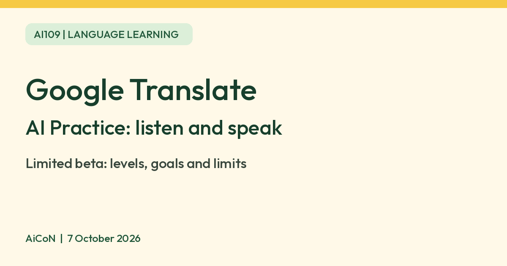

Google Translate Practice: AI speaking and listening drills
Google Translate has a Practice tab, in limited beta, that builds AI listening and speaking exercises around your level and goals. Hindi and Bengali speakers can practise English. Google warns that generative AI is experimental and can be inaccurate.

What it is
Google Translate has a Practice tab that creates listening and speaking exercises for you using AI. You choose your level (Basic, Intermediate or Advanced) and say what you want to learn for, such as travel, school or work. Translate then suggests scenarios built around that goal. You can also create your own scenario.
Who can use it
Google's help page calls this a limited beta. It lists speakers of Bengali, Dutch, French, German, Hindi, Italian, Portuguese, Romanian, Simplified Chinese, Spanish and Swedish learning English. It also lists English speakers learning French, German, Portuguese or Spanish. India is on the list of supported countries. The help page does not list Tamil, Telugu, Malayalam or other Indian languages as starting languages for Practice.
How to start
- Update the Google Translate app on Android or iPhone.
- Tap Practice at the bottom of the screen, then Get started.
- Pick the language for instructions and the language you want to practise.
- Pick your level and describe your goal in your own words, or choose from the list.
- Pick a scenario, then choose Listening or Speaking.
The two activity types
| Listening | You hear a short audio clip in the language you are practising and tap the words you hear. You can tap Make it harder or Make it easier after each round. |
|---|---|
| Speaking | You practise a conversation with AI to complete the tasks in your scenario. |
| Progress | You earn a daily star for each completed activity. You can delete your practice history in Settings. |
Limits to know
- Google says on the same page: generative AI is experimental and can be inaccurate. Treat corrections as a guide, not a final grade.
- It is a beta. Languages and countries can change, so check what the Practice tab offers on your phone.
- It is practice, not a full course. It does not replace a teacher or structured lessons.
- Google Translate is listed as free on the Indian App Store. We did not verify any paid plan for the Practice tab, and we do not quote a price.
Frequently asked questions
Is it free?
The app is listed as free on the Indian App Store. We did not verify any Practice-specific charge.
Can I practise Hindi or Malayalam?
Hindi and Bengali speakers can practise English. Google's page does not list Indian languages as languages to learn in Practice.
Is it always accurate?
No. Google says generative AI is experimental and can be inaccurate.
Sources: Google Translate Help: personalised conversation practice, Google, 26 August 2025, Google, 12 December 2025, App Store India. Checked 7 October 2026.